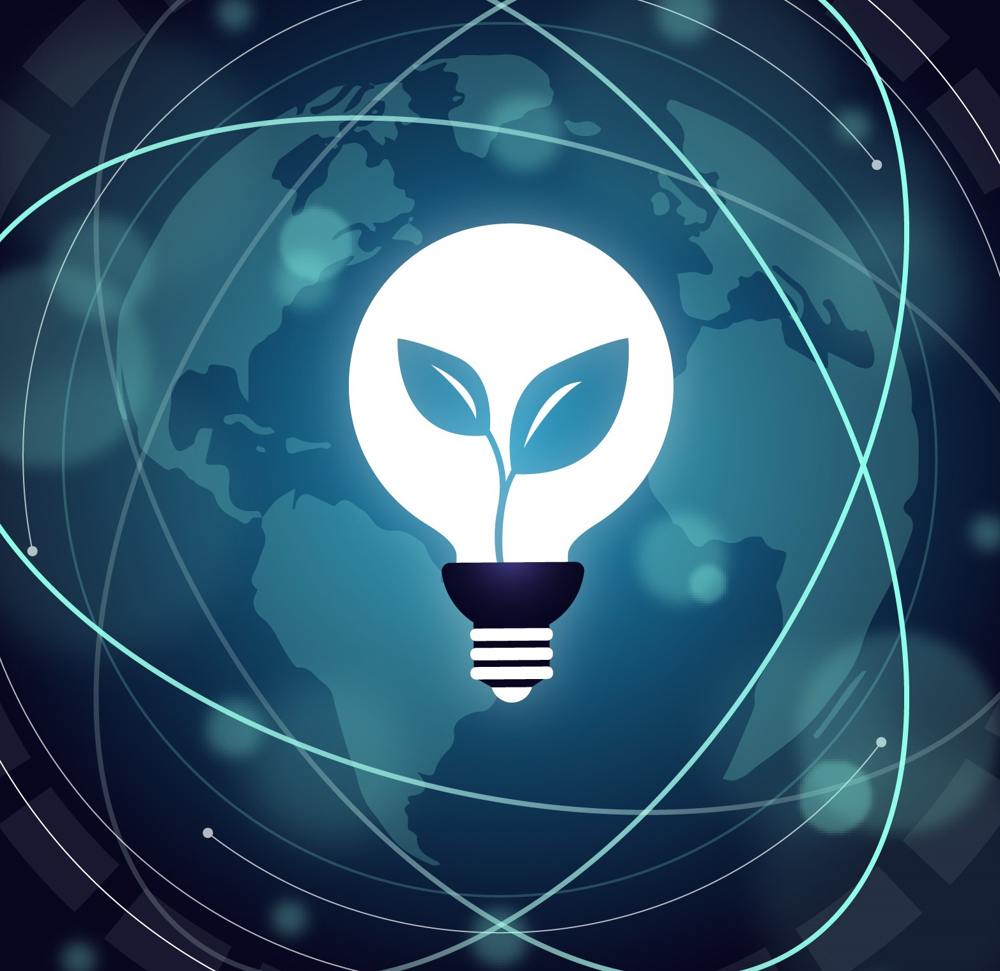
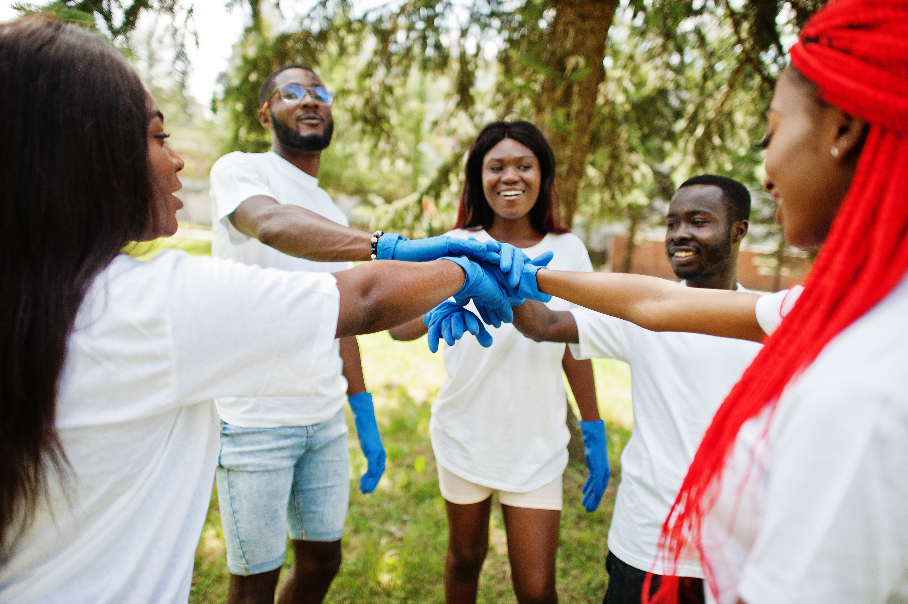
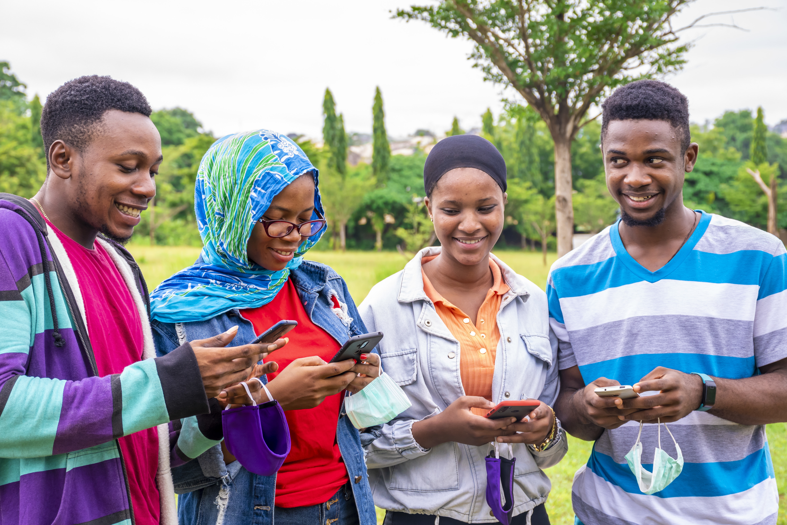
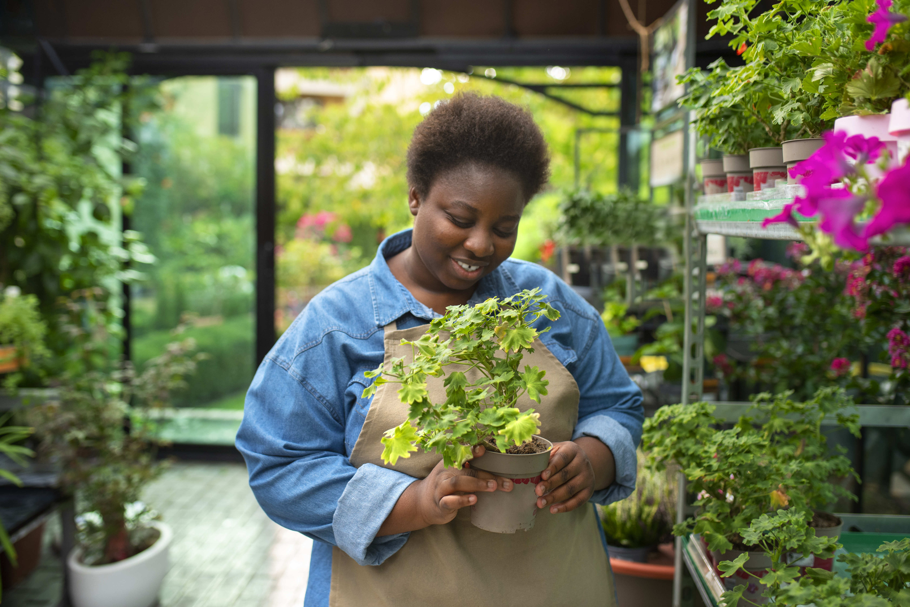
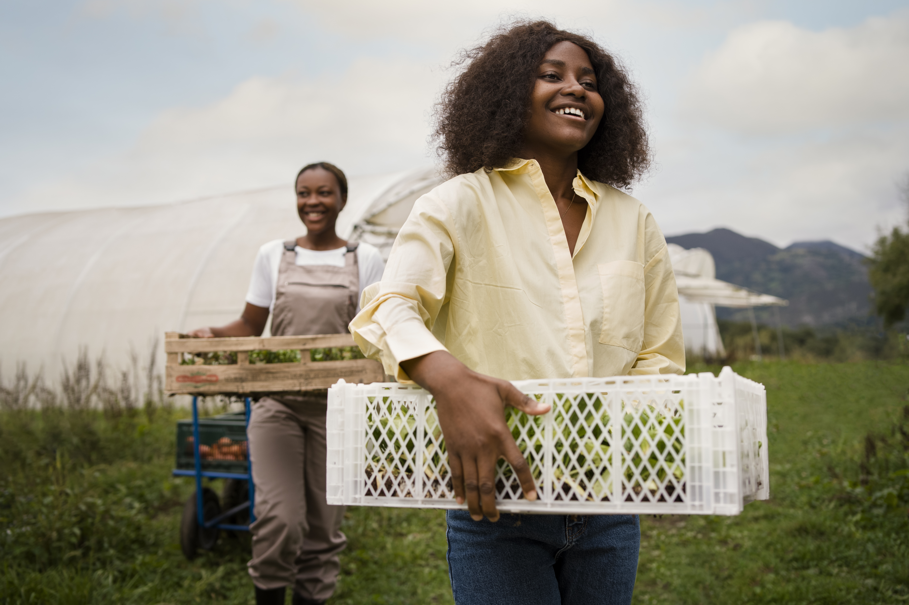
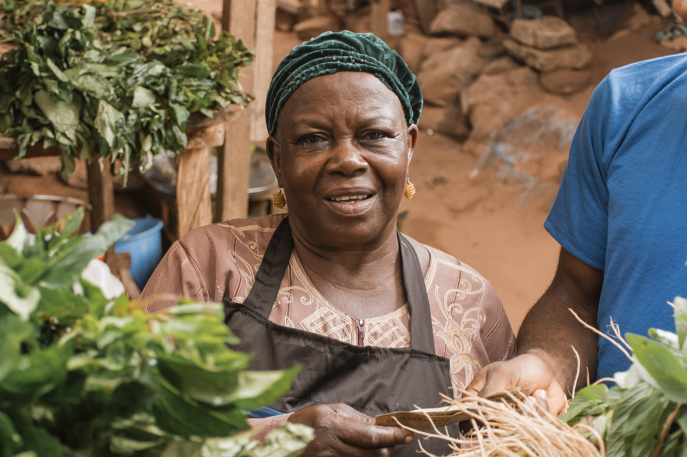
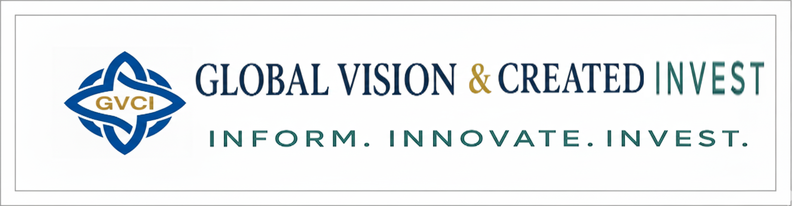

Informer
Nous nous engageons à informer et sensibiliser le public sur les enjeux économiques, technologiques, culturels et sociaux, en mettant l’accent sur la compréhension, l’analyse et l’anticipation des transformations du monde contemporain.
“Inform. Innovate. Invest.”
Global Vision & Created Invest est une structure dynamique et intégrée, positionnée à l'intersection de l'information, de l'innovation et de l'investissement.
Nous soutenons également l’État dans ses actions, particulièrement dans les secteurs vulnérables et locaux, afin de favoriser un développement inclusif et durable pour l’ensemble de la communauté.

Notre mission est de catalyser la croissance en transformant les idées novatrices en réussites économiques tangibles.

Nous nous engageons à informer et sensibiliser le public sur les enjeux économiques, technologiques, culturels et sociaux, en mettant l’accent sur la compréhension, l’analyse et l’anticipation des transformations du monde contemporain.
Économique : Promouvoir la culture financière et entrepreneuriale, expliquer les dynamiques de marché et aider chacun à saisir les opportunités et les défis liés à l’économie locale et mondiale.
Technologique : Mettre en lumière les innovations et les avancées technologiques, tout en sensibilisant aux impacts sociaux, éthiques et environnementaux de ces transformations.
Culturel : Valoriser la diversité culturelle et artistique, encourager le dialogue interculturel et souligner le rôle des traditions et des créations dans le développement de la société.
Social : Explorer les enjeux sociétaux tels que l’éducation, l’inclusion, la santé et l’environnement afin de favoriser une citoyenneté éclairée et engagée.
Concevoir et développer des projets et solutions innovants dans tous les secteurs, en créant une valeur tangible et durable pour les entreprises et la société.
Innovation transversale : Développer des solutions répondant aux besoins actuels et anticipant les défis futurs.
Création de valeur : Générer un impact économique, social et technologique concret.
Approche intégrée : Combiner expertise, créativité et technologie pour proposer des projets cohérents et adaptables.

Identifier et mettre en relation des investisseurs avec des projets innovants afin de faciliter leur financement et assurer leur concrétisation.
Recherche ciblée : Identifier des investisseurs alignés avec les projets proposés.
Mise en relation stratégique : Créer des partenariats solides entre porteurs de projets et investisseurs.
Accompagnement : Suivre les projets tout au long de leur développement.

Agir en tant que guide stratégique pour les porteurs de projets et leurs partenaires, en les accompagnant dans la planification, le développement et la réalisation de leurs initiatives.
These projects combine innovation, investment and community engagement, contributing to social cohesion, reducing unemployment and empowering young peopl
Objectif : Créer un média hyperlocal qui informe, engage et valorise la communauté locale tout en générant des revenus durables.
Application et site web centralisant l’actualité locale.
Espace participatif pour articles, vidéos ou podcasts.
Journalisme collaboratif avec écoles et associations locales.
Monétisation via publicités locales, abonnements premium et sponsors.
IA pour personnaliser l’actualité selon les centres d’intérêt.
Cartographie interactive des événements et initiatives.
Analyse des tendances sociales et économiques locales.
Renforcement du lien social et engagement citoyen.
Mise en lumière des talents et entreprises locales.
Création d’un écosystème médiatique durable.




Objectif : Promouvoir des modes de vie durables dans les quartiers urbains tout en créant un impact social positif.
Micro-jardins urbains et fermes verticales pour légumes locaux et bio.
Réseau d’économie circulaire : compostage, recyclage et réutilisation.
Formation et emploi des jeunes et femmes locales.
Application mobile pour suivre la production et coordonner les activités.
Capteurs pour optimiser l’irrigation et le suivi des ressources.
Économie participative entre habitants.
Mesure d’impact social et environnemental via indicateurs clairs.
Réduction des déchets et promotion de la durabilité locale.
Création d’emplois et renforcement des compétences.
Sensibilisation aux enjeux environnementaux et sociaux.
Renforcement du tissu social et autonomie des communautés.


Objectif : Faciliter l’investissement stratégique dans des projets innovants pour générer une valeur économique, sociale et technologique durable.
Identifier des projets à fort potentiel.
Créer des partenariats solides pour assurer la réussite.
Accompagner les porteurs de projets de l’idée à la réalisation.
Développer des outils pour faciliter transparence et suivi des investissements.
Solutions technologiques pour la gestion des projets et communication.
Écosystème d’investissement participatif.
Approche combinant stratégie financière, impact social et durabilité environnementale.
Maximisation du retour sur investissement et impact positif sur la société.
Soutien à l’innovation locale et à l’entrepreneuriat.
Renforcement des capacités des porteurs de projets.
Création d’un modèle reproductible de projets à forte valeur ajoutée.
NB//: Ces projets combinent innovation, investissement et engagement communautaire, contribuant à la cohésion sociale, à la réduction du chômage et à la responsabilisation des jeunes.
Updade the latest information on our projects we are woring on and more..
Date : 01 Novembre 2025
Résumé de l'actualité ou événement récent.
Lire la suite >>Date : 25 Octobre 2025
Résumé d'une autre information importante.
Lire la suite >>